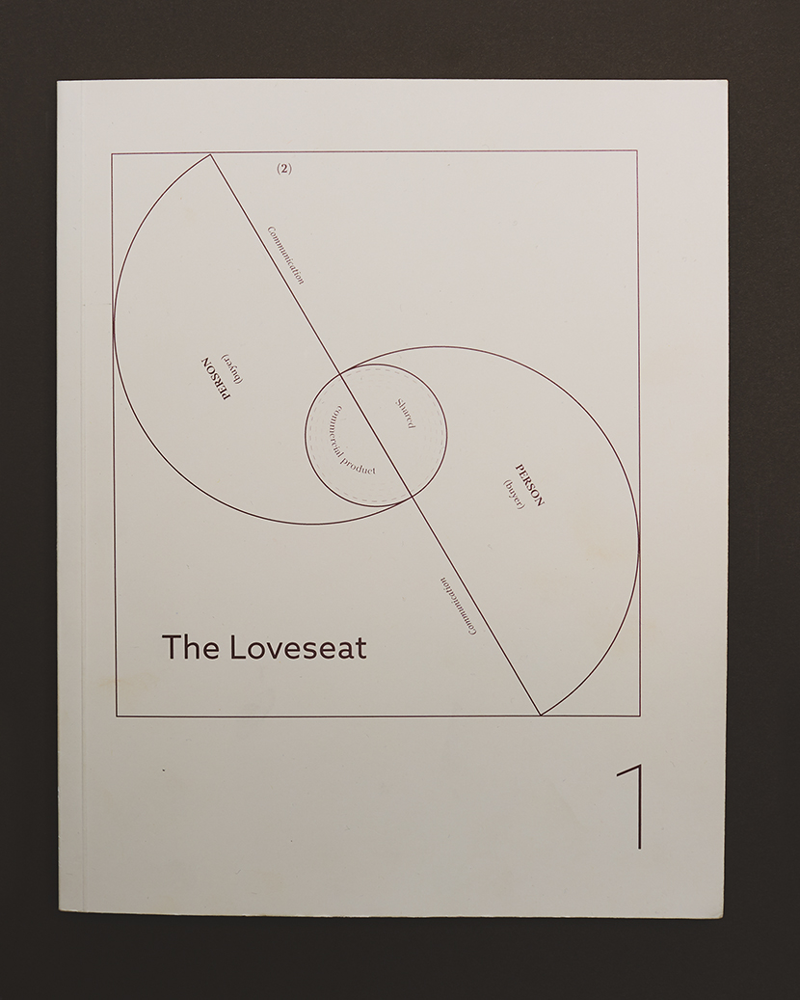

Parsons School of
Design, 2018
This research on the future of ownership economics is compiled into a book containing select writings from John Wood, Cameron Tonkinwise, Kate Raworth and David Graeber in which the authors challenge existing economic models and analyze what it will take to change them.
I frame the book both visually, and in its content to support my commercial proposition of The Loveseat.
The book is designed using a system of footnotes as an interaction. It appropriates this literary aspect of the footnote and applies it to the framework of a network, where information is less hierarchical and exclusive. It also uses captivating graphic imagery to enhance the learning experience without subduing the writing.
This two-part project is composed of this research book that organizes and frames findings in support of a second, experiential book,  which documents interactions under a proposed system.